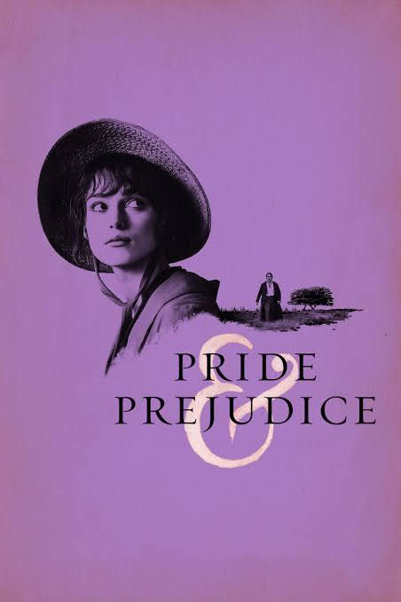

Pride & Prejudice
The 2005 film "Pride and Prejudice" is a romantic comedy which is based on the 1813 novel written by Jane Austen.
What's Captivating About The Movie:
This film immediately captures the attention of anyone watching it. There are moments when the dialogue can be a bit difficult to understand because of the old-fashioned language used in the 1810s, which is when the film takes place.
However, the body language and facial expressions of the characters make the story easy to follow. Even without knowing exactly what the characters are thinking, their actions and reactions clearly convey their emotions and intentions.
Plot:
The 2005 film "Pride and Prejudice" is a romantic drama which is based on the 1813 novel written by Jane Austen. It tells a story that circuits back into the 1810's in England of enemies growing into each other in unexpected ways. The story focuses on Elizabeth Bennet, who is the second daughter of an Englishman and his wife, Mr and Mrs. Bennet and also a sister to her 4 siblings. Elizabeth is a very outspoken, independent, witty and intelligent but she is also very proud and stubborn.
One day Elizabeth arrives at her house and finds her two younger sisters, Lydia and Kitty, spying on their parents who are talking about how one of the upper class gentlemen, Mr. Bingley (Charles Bingley), has moved into a nearby estate. Later on the Bennet family goes to a ball and see Mr. Bingley himself with his sister (Caroline Bingley) and a close friend of Mr. Bingley (Mr. Darcy) who is more reserved, proud, noble and intelligent. Mrs. Bennet then goes to introduce her daughters to Mr. Bingley in hopes that one would marry off into a rich family.
Mr. Bingley and Elizabeth's older sister, Jane, strike up a conversation and while that is going on Elizabeth decides to try and start a conversation with Mr. Darcy which doesn't end too well. Later on she overhears Mr. Darcy saying a rather insulting comment about her and later decides to hint at the fact that she overheard his insult. This insult that Mr. Darcy spoke about leaves a bad impression on Elizabeth, with her thinking of him as negative and arrogant.
The movie also focuses on Mr. Bingley's and Jane's fondness towards each other. It also mentions more drama not just between Elizabeth and Mr. Darcy but also with an unpleasant distant cousin of Mr. Bennet, Mr. Collins, who is to inherit the land and house of the Bennet family when Mr. Bennet dies due to the fact that they don't have any sons that would inherit and that their daughters aren't married yet. Then Mr. Collins takes a liking towards Jane but is told that she is betrothed so he seeks to marry Elizabeth. There is also drama that involves a charming lieutenant named Wickham who has taken a liking toward Elizabeth but also has a strong tension with Mr. Darcy.
Ratings:
This movie has one main plot with several smaller plots that correlate to the main story told. All of these problems work together to make a more interesting and captivating story for the viewer to watch. This film really catches the attention of whoever is watching it. Although there are moments where the dialogue is a bit more difficult to understand due to the language people had back in the 1810's. There were moments for me where I had to pause, rewind and replay the scene to really understand what was going on.
What I loved most about this film was the body language, facial expressions and chemistry that the characters had. Even if I didn't quite understand what was happening, I could look at their body language and movement and it would clear up the confusion I had. The background, music and movement of the characters made it feel so alive yet so unreal.
Recommendation:
I rate this movie a 4.6/5 due to very old fashioned language and old traditions that don't translate well into modern times. Besides that, this film is very solid and alluring with its story and characters.
If you like this movie, I recommend you watch "Little Women," "Sense and Sensibility," or "The Notebook."

Filed under Romance, Book to Film